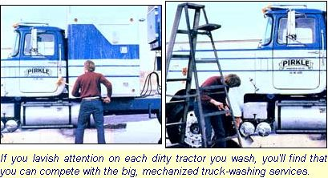

You can get into this profitable business with practically no start-up capital!
If you live within commuting distance of a truck stop, you could be in business for yourself-and making more than $100 a day-within two weeks from right now . How? Well, by taking advantage of dirt!
Trucks that travel 2,000 miles or more each week can get downright filthy, and there's money to be made in cleaning the dirty diesels. Furthermore, before you get turned off by the thought of scrubbing down behemoths that are 55 feet long and 13 feet high, consider this: Most drivers will want to have just their tractors washed ... not their trailers.
Many load-haulers (even the independents) switch trailers regularly ... and the big, mechanized truck washes do a pretty fair job of keeping the "boxes" clean, but not the cabs. The fact of the matter is that an entrepreneur who runs a "Tractors Only" business can stay competitive with the "big guys" by lavishing special attention on each vehicle.
Then, too, most 18-wheeler drivers take a lot of pride in their equipment. In many cases, their trucks are virtually their homes, and so the men and women want those traveling dwellings to look good as they churn down the freeway.
To get started in this profitable enterprise, you'll first have to make an appointment with the manager of your local truck stop and do a little selling. Explain your concept, and tell the boss that you don't want to set up as an employee, but-instead-as an independent contractor. Stress that you intend to be the best struck washer on the interstate, and that your reputation will increase his or her business. (It's true! If drivers can get a top-notch wash job while they stop for a bite to eat, they'll be more inclined to choose your location ... regularly. ) If the manager is unwilling to let you open up shop for no charge, perhaps you can work out a rental arrangement covering space and water.
Once you and the truck stop operator are able to come to an agreement, choose the exact location of your "wash rack" carefully. The spot should be paved ... have good drainage capabilities ... and-of course-be easily accessible to the monstrous vehicles.
If you make a small investment in equipment-right at the start-your job will be easier and the quality of your work higher. First, unless the truck stop provides it, you'll want to purchase a good stout hose that's long enough to do the job. (A garden hose will work, but it's likely to be damaged the first time 37 tons of truck rolls over it!) Also, be sure to get a trigger-controlled spray nozzle and a good-sized bucket or two.
A couple of soft, fleecy "wash mitts" (available at auto parts stored will be easier to use and more durable than sponges. (To do a better job and prolong the life of your mitts, use one for the worst of the gritty dirt and reserve the other for followup work or less severely soiled areas.
You'll need some kind of soap or detergent too. and my experience has shown me that an ordinary dishwashing liquid works as well as any of the more "exotic suds.
Finally, a soft-bristled brush with a long handle is necessary to reach hard-to-get-at spots ... a tall stepladder will be a lot of help ... and a good pair of waterproof boots is almost mandatory.
You might also decide to offer a couple of extra services, such as "degreasing" and interior cleaning. The former task requires a small sprayer with a hand pump, and a supply of kerosene to remove the grime and oil from wheels, exhaust stacks, fuel tanks, engines, and frames. (Simply spray a light coating of kerosene on the affected parts, and then wash them with your regular detergent.)
If you (or an assistant) would like to earn extra cash by doing interiors, get some window cleaner, plus a couple of cans of furniture wax to use on the instrument panels and upholstery. (Both Pledge and Behold work well, and either, one can help remove stubborn, salty "white spots" on the tractor's exterior, as well.)
After you've been working for a few weeks, you might find it worthwhile to buy or rent a pressure washer. Many hardware stores (and spray equipment supply outfits) will lease-at low cost-machines that'll pump a water and soap mixture at a pressure of about 200 pounds per square inch. (A pressure setup won't allow you to forgo handwork, but it can speed up the whole washing process )
It shouldn't take you long to learn how to clean a truck well. First, drench the machine with clear water, to prevent grit from scratching the paint as you work. Then apply your degreaser, if nec essary (avoid getting it on the glass)
Now shove your mitts and brush into the suds and go to it ... working from the top to the bottom, and rinsing each area thoroughly before the soap can dry. (You'll soon discover that trucks help to control the summer insect population. Bugs will often be plastered on the grilles and bumpers. Getting them off is relatively easy if you use a sponge wrapped in nylon mesh.)
Very few mechanized truck washes clean the roof of the cab. So if you can get up there with your ladder and brush, it'll be noticed-and appreciated-the first time the driver runs into wet weather, since there'll be no rooftop dirt streaming down his or her windows.
In order to attract and keep customers, you should try to establish regular working hours. It's best to be on the job during the early evening, since most drivers like to take a break at that time. (Early morning Is fairly slow, because many truckers are busy loading and unloading then.) Don't try to wash in the dark, though, or you'll miss too much. You won't be able to work when the temperature drops below freezing, either, but heavy rubber gloves will let you keep on cleaning in marginal weather.
Once you've cultivated a few "regulars", you might want to have one of them show you how to operate the big vehicles. If you can learn to move the trucks around the parking lot, your business will increase ... since drivers will be able to leave their trucks, get some supper, and return to clean machines. (But for heaven's sake, don't start jockeying the beasts about until you know what you're doing! Even a minor parking lot accident is likely to cause more grief than you can imagine! )
How much can you earn as a truck washer? Well, you'll have no trouble finding customers if you price your service between $8.00 and $12.00 per tractor. (Those with the long nose and hood are usually harder to wash than are cabovers, so it might be smart to charge more for the "difficult" types.) Then you should add $2.00 or $3.00 If you do any interior work.
Once you've got the knack, you should have no trouble washing two tractors per hour. It doesn't take a lot of fancy math to figure out that an income of $100 a day is a conservative estimate.
The most important thing to remember is to maintain the quality of your work. If you can't do a better job than the automated cleaners, you won't last long. Remember that the CB radio spreads information fast. And, although it's illegal to advertise your business over the airways, truckers do talk ... and one dissatisfied customer can put a crimp in your income to a real hurry.
In fact, I've found that I can assure a steady stream of business by offering a guarantee. I let truckers know that I won't let unhappy customers drive away, and that I'll keep washing until they're satisfied. Try it yourself. Before you know it, word will spread like chicken pox in a second grade classroom... and the tractors will be lined up and waiting!
|
 |
|
|